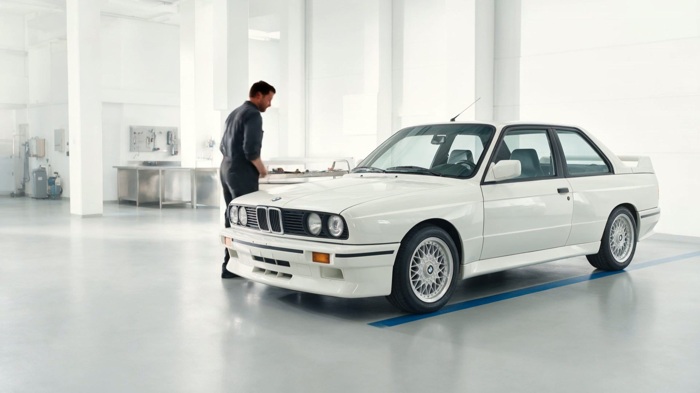
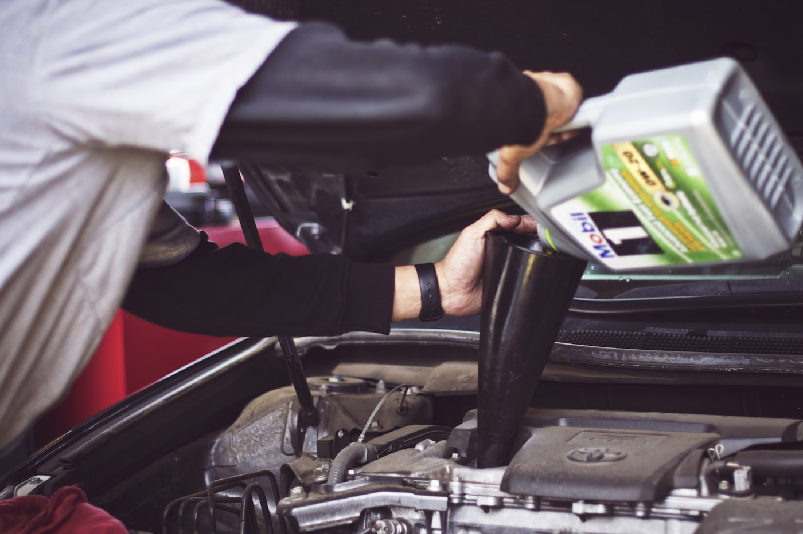
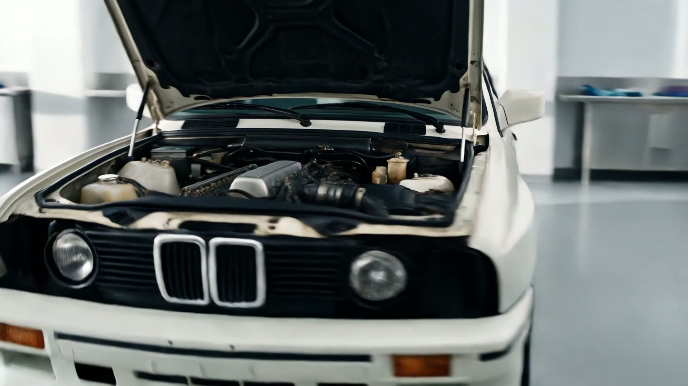
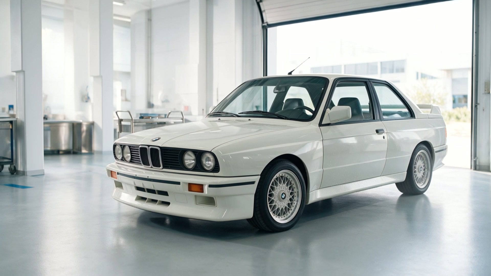

Werkstatt · Pflege · Werterhalt
Alles fürs Auto.
Ein Team.
Vom Alltagsservice bis zur behutsamen Restaurierung. Klare Diagnose, persönliche Beratung und passende Arbeit für Fahrzeug und Nutzung.

Mechanik & Wartung
Inspektion, Bremsen, Fahrwerk, Motor, Getriebe und Elektrik.
Leistung ansehen ↗
Reparatur
Fehler finden, Optionen erklären, sauber reparieren.
Leistung ansehen ↗
Restaurierung
Substanz erhalten und Arbeiten nachvollziehbar planen.
Leistung ansehen ↗
Pflege & Lagerung
Bereit halten, sicher einlagern, regelmäßig betreuen.
Leistung ansehen ↗
Reifenwechsel
Sommer- und Winterräder inklusive Sicht- und Zustandskontrolle.
Leistung ansehen ↗Reifenhotel
Räder gekennzeichnet lagern und zur Saison vorbereiten.
Leistung ansehen ↗Detailing
Innenraum, Lack und Oberflächen materialgerecht pflegen.
Leistung ansehen ↗
Saison- & MFK-Check
Relevante Komponenten vor Saisonstart oder Prüfung kontrollieren.
Leistung ansehen ↗Direkter Kontakt
Nicht sicher, was Ihr Auto braucht?
Problem kurz beschreiben. Wir wählen gemeinsam den passenden Termin.